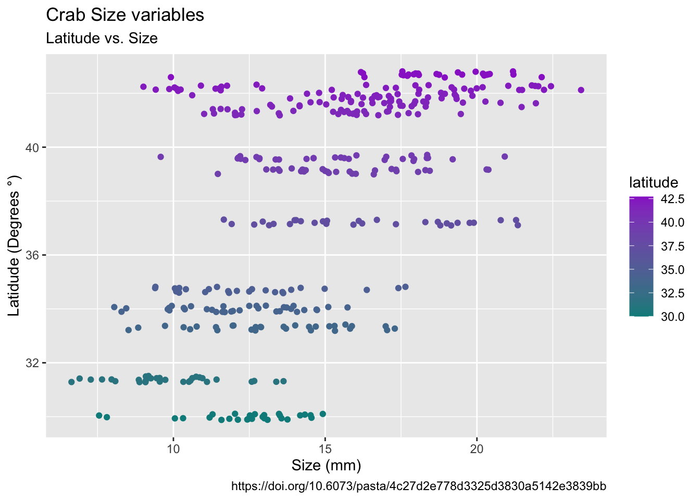

fiddler-crab-sizes
Introduction
Fiddler crab body size in salt marshes from Florida to Massachusetts, USA at PIE and VCR LTER and NOAA NERR sites during summer 2016.
We collected ~30 male, adult Minuca pugnax from thirteen marshes from Florida to Massachusetts and measured their carapace width with calipers. Water and air temperature data were collected from monitoring programs (i.e., LTER, NERR sites), nearby weather stations, and ocean buoys for 2016.
Summary of the df
| Name | pie_crab |
| Number of rows | 392 |
| Number of columns | 9 |
| _______________________ | |
| Column type frequency: | |
| character | 2 |
| Date | 1 |
| numeric | 6 |
| ________________________ | |
| Group variables | None |
Variable type: character
| skim_variable | n_missing | complete_rate | min | max | empty | n_unique | whitespace |
|---|---|---|---|---|---|---|---|
| site | 0 | 1 | 2 | 3 | 0 | 13 | 0 |
| name | 0 | 1 | 8 | 32 | 0 | 13 | 0 |
Variable type: Date
| skim_variable | n_missing | complete_rate | min | max | median | n_unique |
|---|---|---|---|---|---|---|
| date | 0 | 1 | 2016-07-24 | 2016-08-13 | 2016-08-01 | 11 |
Variable type: numeric
| skim_variable | n_missing | complete_rate | mean | sd | p0 | p25 | p50 | p75 | p100 | hist |
|---|---|---|---|---|---|---|---|---|---|---|
| latitude | 0 | 1 | 37.69 | 4.26 | 30.00 | 34.00 | 39.10 | 41.60 | 42.70 | ▃▅▂▃▇ |
| size | 0 | 1 | 14.66 | 3.50 | 6.64 | 12.02 | 14.44 | 17.34 | 23.43 | ▂▇▇▆▂ |
| air_temp | 0 | 1 | 15.20 | 3.79 | 10.29 | 12.05 | 13.93 | 18.63 | 21.79 | ▇▃▂▅▃ |
| air_temp_sd | 0 | 1 | 8.65 | 0.98 | 6.39 | 8.11 | 8.41 | 9.48 | 9.96 | ▂▂▇▂▇ |
| water_temp | 0 | 1 | 17.65 | 3.44 | 13.98 | 14.33 | 17.50 | 20.54 | 24.50 | ▇▂▂▃▁ |
| water_temp_sd | 0 | 1 | 7.25 | 1.13 | 4.84 | 6.57 | 7.00 | 7.86 | 9.12 | ▂▃▇▃▅ |
Plot

Table of mean sd and sample size
| Latitude | Site | Mean Size | SD Size | Sample Size |
|---|---|---|---|---|
| 30.0 | GTM | 12.40 | 1.80 | 28 |
| 31.4 | SI | 9.85 | 1.79 | 30 |
| 33.3 | NIB | 13.29 | 2.42 | 30 |
| 34.0 | ZI | 12.06 | 2.01 | 35 |
| 34.7 | RC | 12.49 | 2.34 | 25 |
| 37.2 | VCR | 16.34 | 2.94 | 30 |
| 39.1 | DB | 15.60 | 2.12 | 30 |
| 39.6 | JC | 15.27 | 2.72 | 30 |
| 41.3 | CT | 14.69 | 2.36 | 33 |
| 41.6 | NB | 17.14 | 2.29 | 29 |
| 41.9 | CC | 16.82 | 2.05 | 27 |
| 42.2 | BC | 16.20 | 4.81 | 37 |
| 42.7 | PIE | 18.50 | 2.30 | 28 |
Citations
Source
Johnson, D. 2019. Fiddler crab body size in salt marshes from Florida to Massachusetts, USA at PIE and VCR LTER and NOAA NERR sites during summer 2016. ver 1. Environmental Data Initiative. https://doi.org/10.6073/pasta/4c27d2e778d3325d3830a5142e3839bb